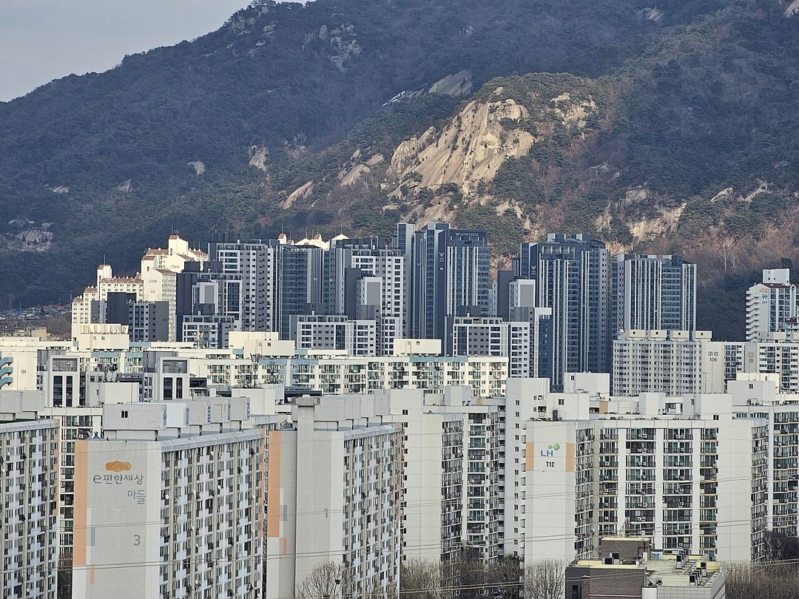
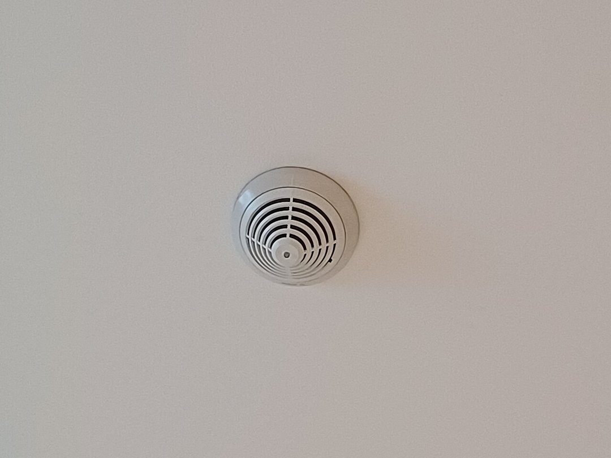

📷 사진 1 자리

▲ 서울 노원구 아파트 단지(2024년 자료사진) · 사진: Ox1997cow / CC BY-SA 4.0 / 위키미디어 공용
12월 1일부터 기한 안에 소방시설 점검을 하지 않은 세대는 과태료 50만 원 대상이 돼요. 업체를 부를 필요는 없어요. 관리사무소에서 점검표를 받아 집 안 소방시설을 살펴보고 11월 30일까지 제출하면 돼요.
다만 유예가 끝난다고 모든 집이 바로 내는 건 아니에요. 우리 단지의 2년 기한이 언제인지부터 확인하세요.
3줄 요약
우리 집도 과태료 대상일까
세대점검은 아파트 같은 공동주택의 집 안 소방시설을 2년마다 확인하는 제도예요. 2022년 12월에 생겼어요. 소방청 설명을 보면 2년은 2022년 12월 1일 이후 우리 단지가 점검한 날부터 세요. 그래서 단지마다 급한 정도가 달라요.
| 우리 집 상황 | 지금 할 일 |
|---|---|
| 이번 주기에 점검표를 냈다 | 관리사무소에서 완료 처리만 확인 |
| 기한이 지났는데 안 냈다 | 11월 30일까지 제출 |
| 기한이 아직 남았다 | 마감일을 물어보고 미리 제출 |
| 새 아파트에 입주했다 | 사용승인 뒤 2년 안에 완료 |
전북소방본부는 관리사무소가 방송과 문자, 방문으로 충분히 알렸는데도 응하지 않은 입주민에게 과태료를 물릴 수 있다고 설명했어요. 안내문을 받고 미뤄 둔 집이 가장 먼저 챙겨야 해요.
왜 300만 원에서 50만 원이 됐나
처음 기준은 최대 300만 원이었어요. 부담이 크다는 지적에 정부는 2025년 11월 25일 시행령을 고쳤고 12월 1일부터 세대점검을 하지 않은 입주민 기준을 50만 원으로 따로 나눴어요. 경기도 안내문은 '50만 원 이하'로 적고 있어요.
과태료 부과는 두 번 미뤄졌어요. 처음에는 2025년 11월 30일까지였고 다시 1년 늘려 2026년 11월 30일까지가 됐어요. 강원소방본부는 유예가 되풀이되면서 추가 연장을 기대하고 점검을 미루는 사례가 생길 수 있다며 이번 기간 안에 마쳐 달라고 했어요.
대부분의 집은 이미 끝냈어요. 강원은 35만 2,183세대 중 99.7%, 전북은 42만 4,959세대 중 99.8%가 점검을 마쳤어요(10월 발표 기준).
집에서 점검하는 순서
1. 관리사무소 소방안전관리자에게 '소방시설 외관 점검표(세대 점검용)'를 받아요.
2. 아래 표대로 집 안을 살펴보고 점검표에 표시해요.
3. 점검표를 관리사무소에 다시 내요. 단지에서 앱을 쓴다면 앱으로도 낼 수 있어요.
| 볼 것 | 확인할 점 |
|---|---|
| 소화기 | 바늘이 녹색, 제조 10년 이내 |
| 자동확산소화기 | 변형·손상·부식 없음 |
| 주방 자동소화장치 | 압력계 정상 |
| 스프링클러 헤드 | 변형·손상·부식 없음 |
| 화재 감지기 | 떨어지거나 깨지지 않음 |
| 가스누설 경보기 | 전원 표시등 켜짐 |
| 완강기 | 앞을 막은 짐 없음, 부식 없음 |
집에 없는 시설은 점검표를 받을 때 물어보세요. 고장을 찾으면 숨기지 말고 관리사무소에 알려야 수리로 이어져요.
📷 사진 2 자리

▲ 천장에 달린 화재 감지기(자료사진) · 사진: Curpharar / CC BY-SA 4.0 / 위키미디어 공용
자주 묻는 질문
Q. 세입자도 과태료를 내나요?
한국아파트신문 보도를 보면 의무는 관리자와 세대별 소유자, 점유자인 세입자 모두에게 있어요. 빈집이라면 집주인이 챙겨야 하고 세를 준 집이라면 누가 낼지 미리 정해 두세요.
Q. 11월 30일까지 집을 비우는데 어떡하죠?
관리사무소에 바로 연락해 방법과 날짜를 정하세요. 소방청은 첫 유예 때 이행계획서를 내면 사정에 따라 기간을 줬어요. 지금도 되는지는 관할 소방서에 물어봐야 해요.
Q. 관리사무소가 대신 해 주나요?
단지마다 달라요. 관리자가 방문하거나 점검업체가 해 주는 곳도 있고 입주민이 직접 해야 하는 곳도 있어요.
아직 모르는 것
소방청은 2025년 유예를 늘리면서 형편이 어려운 가구의 과태료를 10만 원 수준으로 낮추는 방안도 검토한다고 했어요. 국가법령정보센터에서 과태료 기준의 개정 기록을 보면 그 뒤로는 다른 법이 바뀌어 따라 고친 '타법개정'만 있어요. 감경이 확정됐다는 자료는 찾지 못했어요.
현장에서는 고령 입주민에게 과태료는 지나치다는 반론도 있어요. 주택관리사협회는 경고로 바꾸자고 했지만 소방청은 이미 50만 원으로 낮춰 더 완화하기는 어렵다고 답했어요.
과태료보다 먼저 물어볼 건 "우리 단지 마감일이 언제예요?" 한 가지예요. 2년 주기가 단지마다 달라서 뉴스의 12월 1일만 보면 내가 급한지 알 수 없어요. 전화 한 통으로 마감일과 우리 집 제출 여부를 함께 확인하는 게 가장 빨라요.
11월 30일은 월요일이에요. 주말에는 관리사무소 접수가 안 되는 곳이 있으니 27일 금요일까지 내 두면 마음이 편해요.
함께 보면 좋은 이슈
끝까지 읽어 주셔서 감사해요. 공감(좋아요) ♥ 꾹, 이웃 추가도 부탁드려요!